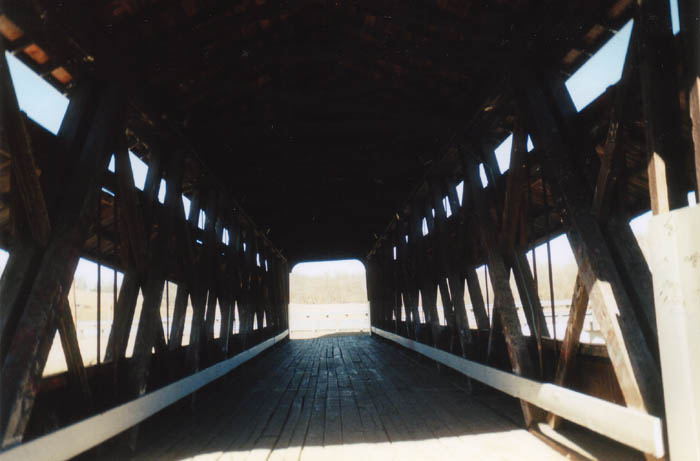

Yes, there really is a town named Revenge, in Fairfield County. It's less an active, populated village than a ghost town these days, but many things still remain--the general store (now a house), the quarry...and the Johnson Covered Bridge, which has been moved aside into a small park and blocked off as an historical curiosity.

A woman has haunted the bridge since long before it was retired from service. No one knows for sure who she is, but there are stories. In one version, she fell into Clear Creek and drowned while helping to guide the horses drawing her family's buggy during a thunderstorm. Another tale has the woman learning of her husband's infidelity and killing herself at the bridge, either by jumping or hanging herself beneath it.

The woman's ghost stayed with the bridge and now haunts it as it sits in the park. You might see her form inside some evening, pacing it from end to end, or standing at one entrance, looking out. Most often she's seen to beckon to people. If you obey her call, who knows what might happen to you?
Back